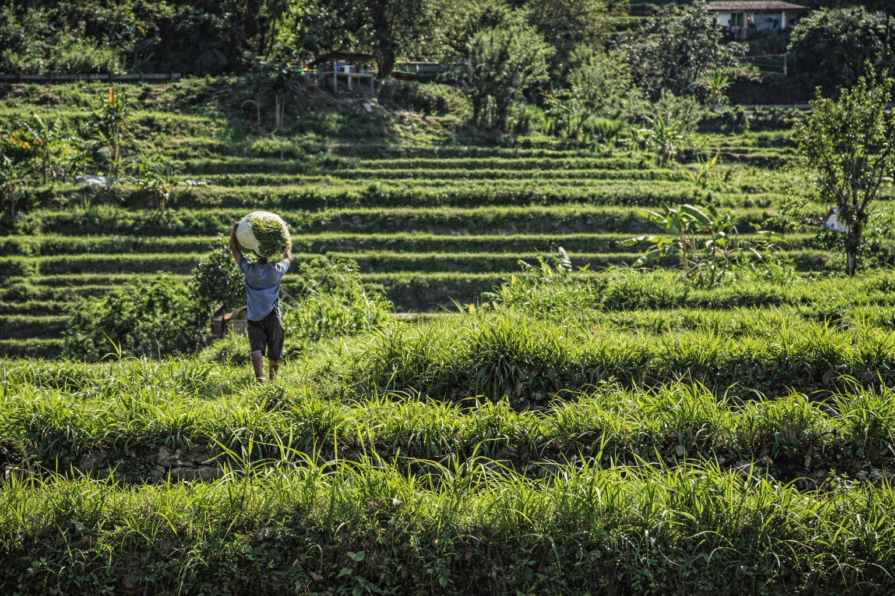

Há passatempos que vão e voltam. O meu, curiosamente, é fazer cocktails.
Em 2023, ofereci um shaker ao meu irmão, mas acabei por ser eu a levar o hobby a sério.
Desde então, tenho experimentado alguns um pouco por todo o mundo e, claro, tentado recriá-los em casa. O que partilho aqui é precisamente isso: uma mistura de descobertas e tentativas (assumidamente amadoras), mas feitas com entusiasmo.
Quick disclaimer: todas as medidas estão em Onzes. Pode parecer estranho ao início, mas com um jigger torna-se muito mais simples. E, na ausência de um: 1 oz ≈ 30 ml.
1. Margarita, “My Fav”
A Margarita foi o primeiro cocktail que aprendi a fazer e, até hoje, continua a ser o meu go-to. É leve, equilibrada e, acima de tudo, fácil de acertar.
Ingredientes:
- ¾ oz de sumo de lima
- ¼ oz de adoçante líquido (supostamente deveria ser simple syrup, contudo não percebo o que será o equivalente em Portugal. Se souberem, let me know!)
- ¾ oz de triple sec (comprem Cointreau, vale a pena)
- 1 + ½ oz de tequila
Modo de Preparação:
- Meter tudo no shaker com bastante gelo
- Shake, shake, shake
- Para um resultado mais “profissional” (e sem esforço), passem a borda do copo por água e depois por sal grosso
- Servir e está feito!
Simples, rápida e sempre um sucesso.
2. Cosmopolitana, “Main character”
A Cosmopolitana não precisa de grande apresentação. Quem sabe, sabe!
Ingredientes:
- 1 ½ oz de vodka (pessoalmente, prefiro tequila… e funciona igualmente bem)
- ¾ oz de Cointreau
- ½ oz de sumo de lima
- ½ oz de sumo de frutos vermelhos (cranberry juice)
- 1 tsp de adoçante líquido
Modo de Preparação:
- Meter tudo no shaker com bastante gelo
- Shake até doerem os braços
- E servir!
Tal como a série, é um clássico que facilmente se torna um hábito.
3. Kungfu Pandan, “Vacation in a drink”
Descobri este cocktail em Melbourne numa noite em que estava indecisa entre várias opções, até ver no menu: “Kungfu Pandan — A vacation in a drink”. Foi o suficiente.
Quando era pequena chamavam-me “panda do kung fu”... Esta memória foi o critério decisivo.
O resultado surpreendeu: um cocktail que sabia literalmente a um batido de banana premium. Vinha ainda decorado com folhas de bambu — detalhe desnecessário, mas achei muito original.
Quanto à receita, após alguma conversa com a bartender e várias tentativas em casa, esta foi a melhor aproximação que consegui:
Ingredientes:
- 1 ½ oz de Havana Especial
- ¾ oz de Massenez Pandan Liqueur
- ¼ oz de Yellow Chartreuse
- ¾ oz de Giffard Brazilian Banana Liqueur
- 1 dash de absinto (cuidado!)
- ¼ oz de adoçante liquído
- ½ oz de Coco Lopez
- 1 oz de sumo de ananás
- ¾ oz de sumo de lima
Modo de Preparação:
- Colocar todos os ingredientes no shaker
- Adicionar bastante gelo
- Shake, shake, shake
- Coar (idealmente com double strain) para um copo alto com gelo
- Decorar com folhas de bambu (essencial para se perceber a referência ao panda!)
Apesar de não saber exatamente como a bartender fez, isto chega suficientemente perto.

4. “A” Caipirinha
Uma caipirinha sabe sempre bem, embora dê mais trabalho do que uma margarita. Mas, sendo a favorita da minha mãe, acaba por voltar à rotação cá de casa com alguma frequência.
Ingredientes:
- 2 oz de cachaça
- 2 limas (cortadas em gomos, sem a casca)
- ¾ oz de adoçante líquido
- 1 rodela de lima
Nota: A receita clássica leva açúcar, mas eu uso adoçante liquído — é mais prático e fica mais homogéneo. As limas, essas, esmago sempre.
Modo de Preparação:
- Colocar as limas no copo e esmagar ligeiramente
- Adicionar o adoçante
- Juntar a cachaça
- Adicionar gelo
- Misturar tudo
- Finalizar com uma rodela de lima
E pronto — dá mais trabalho, mas, pela minha mãe, compensa sempre.
5. Cage Diver, “Seas the Day”
Provei este cocktail no aeroporto de Phoenix, durante uma escala a meio da minha road trip pelos EUA — porque, honestamente, o que mais se faz num aeroporto durante uma longa espera?
Era verão e achei graça à frase “Seas the Day”. Foi o suficiente.
Não estava à espera de grande coisa (é um cocktail de aeroporto, afinal), mas acabou por surpreender — fresco, equilibrado, mas doce sem se tornar enjoativo!
Ingredientes:
- 1 1/2 oz de tequila (Tres Agaves blanco)
- 3/4 oz de Licor 43
- 1/3 oz de agave nectar
- 1 oz de sumo de grapefruit
- 1/2 oz de sumo de lima
- 1/2 oz de sumo de cranberry
- Black lava salt (simplificando, uso apenas sal)
- Gelo
Modo de Preparação:
- Colocar todos os ingredientes no shaker com gelo
- Agitar bem
- Passar uma rodela de lima na borda de um copo baixo e envolver em Sal
- Coar a bebida para o copo com gelo
E pronto, inesperadamente bom para um cocktail de aeroporto!
Como disse no início, este é um daqueles hobbies que vai e volta.
Volta e meia esqueço-me de tudo e tenho de reaprender o que já sabia. Por isso mesmo, faz-me sentido deixar estas receitas registadas.
E já que estava a escrever, pensei: por que não partilhar? Na melhor das hipóteses, ajuda alguém a aventurar-se neste mundo. Na pior… fico com uma ótima cábula pessoal — o que, no fundo, dá muito jeito.